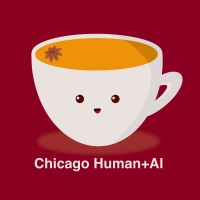
The printing press (~1450) made identical copies of a text at scale.
Science adopted the same form: Philosophical Transactions (1665) made the paper the fixed record of a finding.
“You’d think they were speaking as if they had some understanding, but if you question anything that has been said because you want to learn more, it continues to signify just that very same thing forever.”
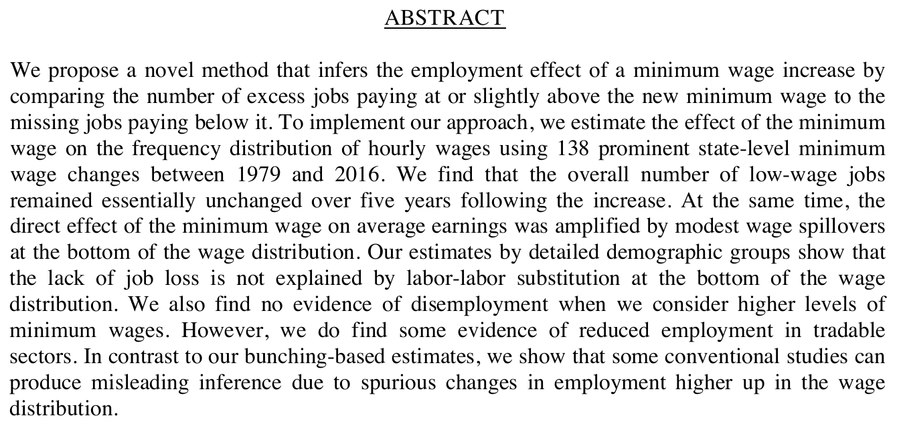
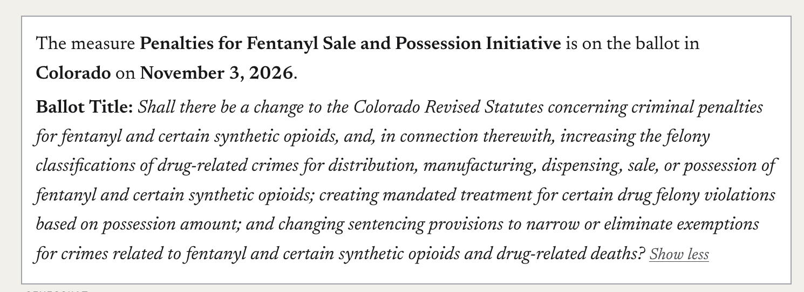
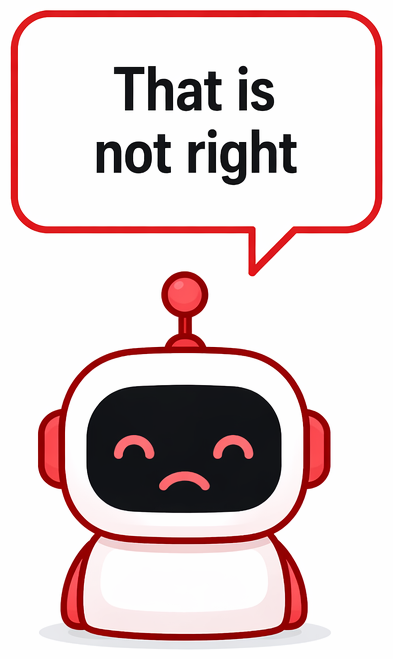
Argumentative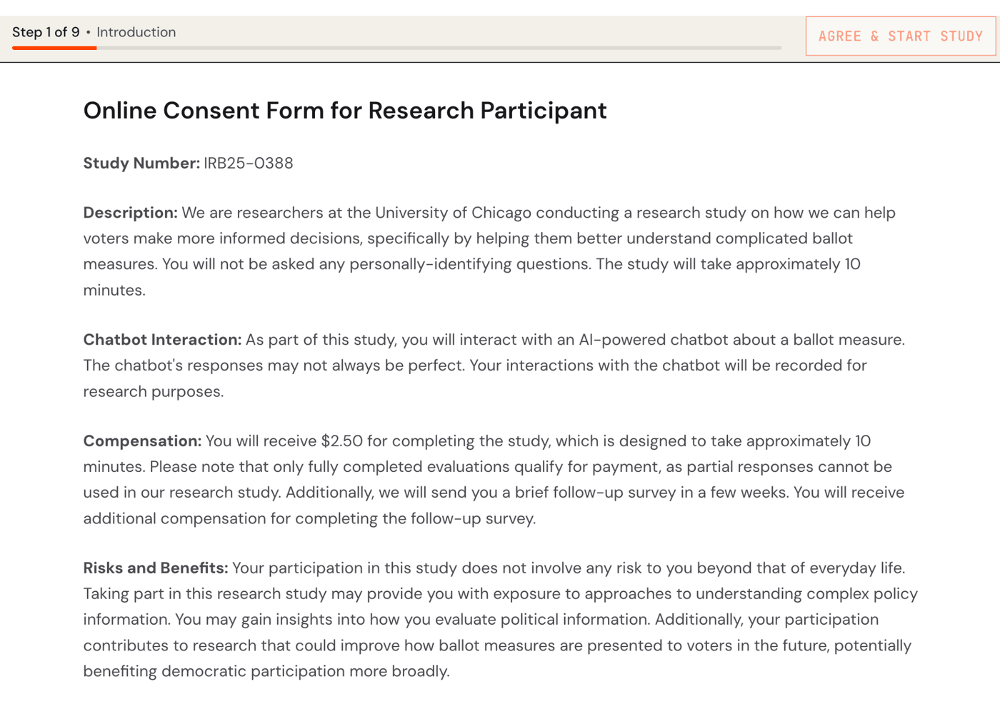
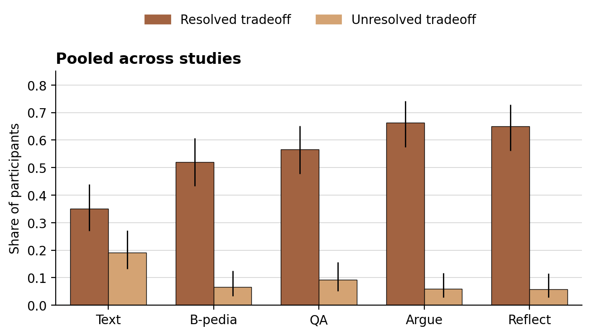
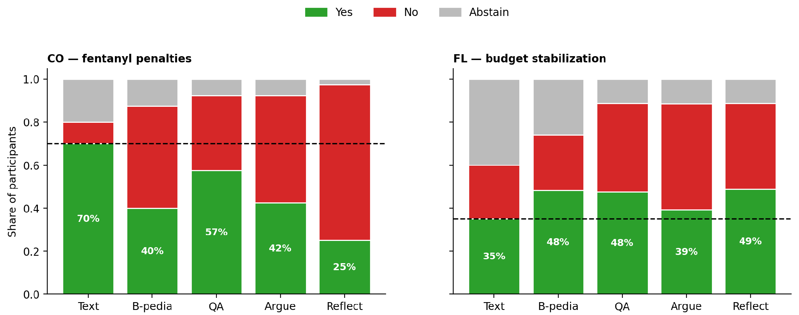
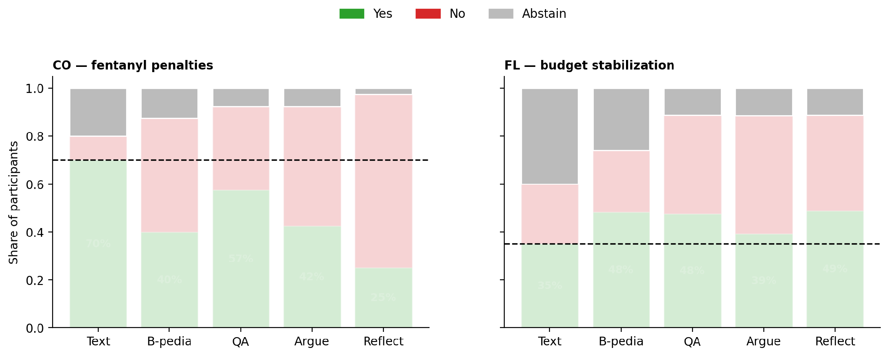
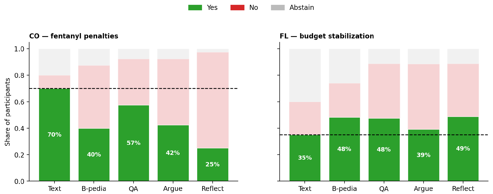
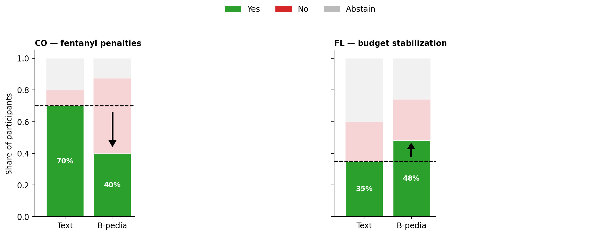
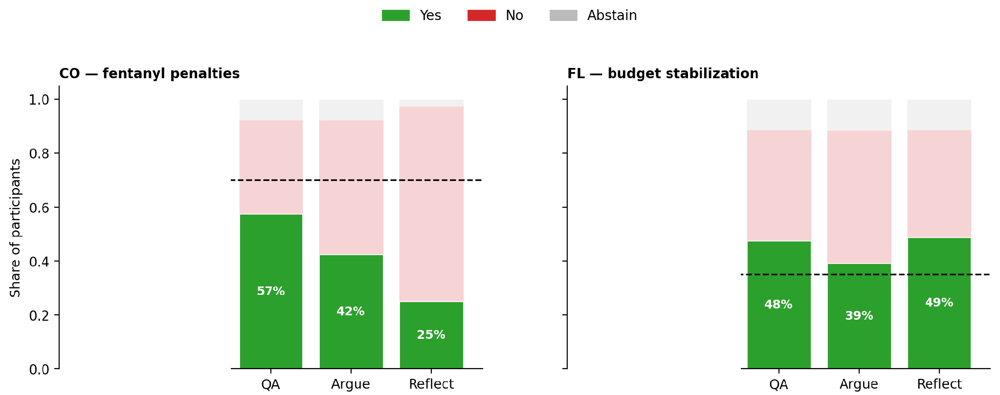
This is an empirical study about the past. We need updated results to understand the current state of the world and to inform policymaking.
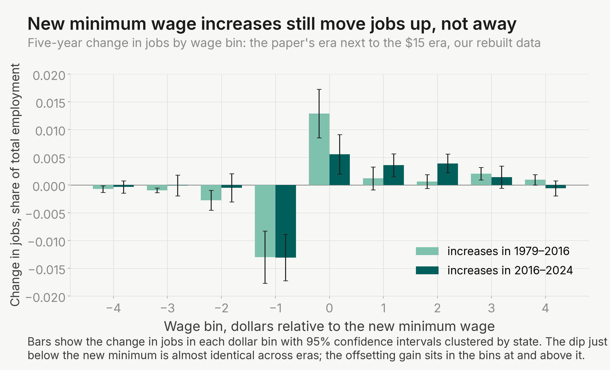
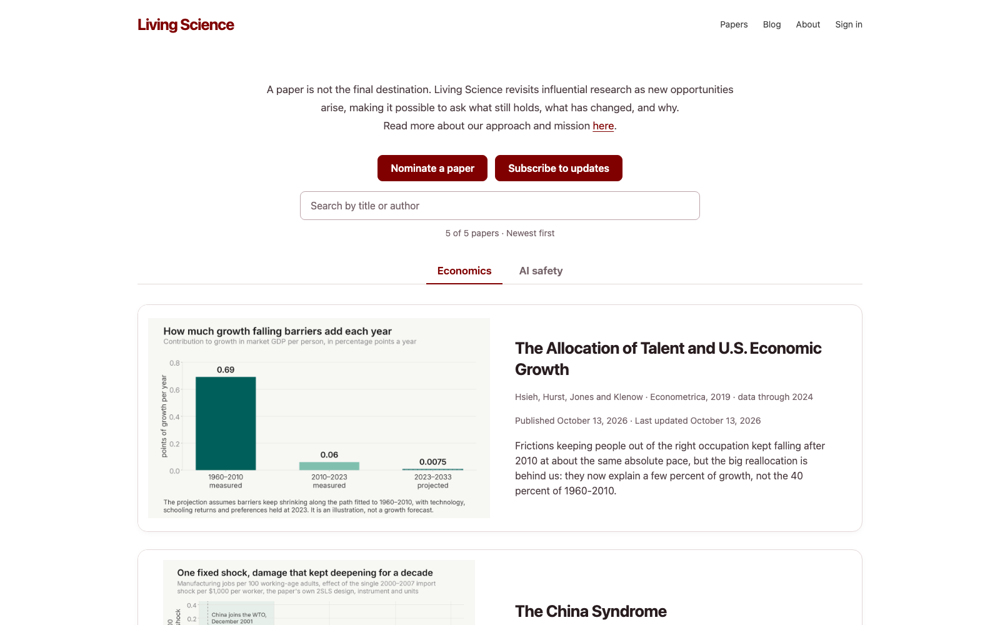
The project is a living project on its own. We would love to work together!
Please nominate papers at livingscience.ai/nominate